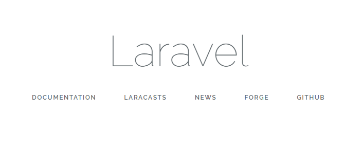

xampp가 모두 깔려있으니까 php 사용환경은 모두 갖춰져있다고 가정하고 진행합니다.
라라벨의 제일 최신버전은 5.6버전이며, 5.6버전은 아래의 요구사항을 만족하는지 확인해야합니다.
xampp설치되있는 경우는 아래조건 다 충족하니 라라벨만 설치하면됩니다.
[설치조건]
C:\xampp\htdocs 해당경로에서 콘솔창 실행
ex) git bash의 경우 마우스 오른쪽 클릭 시 바로 연결가능
라라벨 설치방법은 composer를 통해 배포되는 인스톨러를 이용해서 설치하거나 composer에서 라라벨을 바로 설치하는 방법 두 가지.
샘플사이트 작업시에는 composer에서 라라벨 바로 설치하는 방법으로 진행
위에서 sample 에 해당하는 부분이 라라벨 프로젝트명.
해당부분에 입력한 이름으로 폴더가 생성되고 안에 라라벨 설치됨.
※sample 폴더를 빈폴더라도 미리 만들어놓으면 라라벨 설치안됨. 폴더도 없는 상태로 실행해야함.
설치완료하고 가상호스트 설정해주거나 localhost/sample/public/ 폴더로 접근해서 메인페이지 확인
라라벨에서 웹서버루트에 해당하는 폴더는 public 폴더, http://localhost 접속 시 public 폴더로 연결되도록 가상호스트 설정을 해줘야 설치된 라라벨 확인가능
xampp 설치기준 htdocs에 해당하는 폴더가 라라벨에서는 public 폴더에 해당
- 가상호스트 설정 apache 설정파일 수정
C:\xampp\apache\conf\extra\httpd-vhosts.conf 해당 파일 내 마지막에 아래와 같이 추가하고 저장 후 아파치 재시작
<VirtualHost localhost:80>
DocumentRoot "C:\xampp\htdocs\sample\public"
ServerAdmin localhost
<Directory "C:\xampp\htdocs\sample">
Options Indexes FollowSymLinks
AllowOverride All
Require all granted
</Directory>
</VirtualHost>재시작 후 http://localhost/ 접속 시 아래와 같이 뜨면 완료
* 가장 기본적인 폴더들
| /app |
라라벨 MVC 프레임워크에서 M(모델), C(컨트롤러)에 해당하는 파일들이 해당 경로에 저장됨 모델은 app폴더 내 파일들로 존재하고, 컨트롤러는 /Http/Controllers 경로에 저장 |
|---|---|
| /config | 데이터베이스, 큐, 메일 등 전역 설정들을 담는 디렉토리 |
| /public | 웹서버루트(document root)에 해당하는 경로 |
| /resources | assets Css, js 파일들이 저장되는 디렉토리 views V(뷰)에 해당하는 파일들이 저장된 디렉토리 |
| /routes | 라우팅 설정파일인 web.php가 저장되는 디렉토리 |
| .env | 글로벌 설정 중 DB정보 받은 민감한 정보들 모아놓은 파일 |
| artisan | 라라벨이 제공하는 명령줄 인터페이스 콘솔창에서 $ php artisan 실행 시 제공하는 명령어 확인 가능 |
| vendor | Composer를 이용하여 추가적인 패키지들을 설치한 경우 vendor 폴더에 설치된다. |
* 제일 많이 쓰게 되는 폴더/파일
| /app/Http/Controllers | 컨트롤러 http://l5.appkr.kr/lessons/12-controller.html |
|---|---|
| /database/migrations |
DB마이그레이션 http://l5.appkr.kr/lessons/11-migration.html 테이블을 생성할 수 있는 구조파일들 모여있는 폴더 |
| /views |
실제로 화면을 보여주는 html 파일들이 저장되는 폴더 처음 설치 후 나오는 샘플페이지가 welcome.blade.php페이지에 해당하고 모든 뷰파일은 [이름].blade.php 로 저장해야함. |
| /routes/web.php |
assets Css, js 파일들이 저장되는 디렉토리 views V(뷰)에 해당하는 파일들이 저장된 디렉토리 예를 들어서 http://localhost:80/ 으로 접속했을 때는 welcome.blade.php페이지에 해당하는 뷰를 보여줄 것을 선언하는 페이지 |